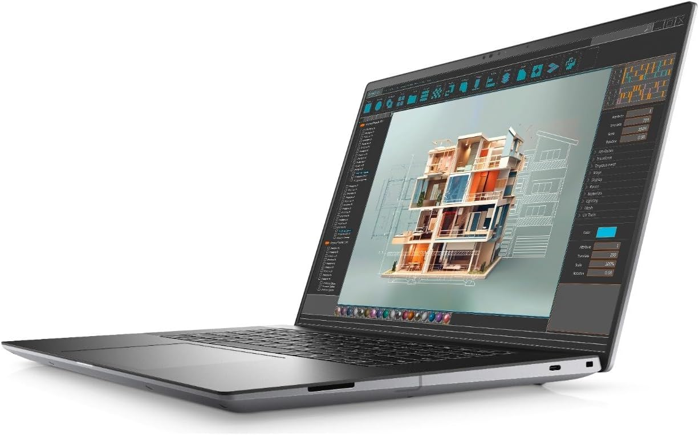
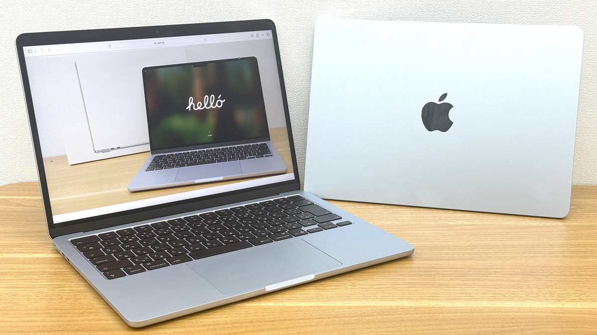

On this page we will outline the key differences between Mac and Windows Laptops to allow you to make an informed purchasing decision.

There are a number of different companies that manufacture Windows laptops, some of the most popular are Dell, HP, Lenovo, Asus and Acer. Click here to visit the UK Microsoft Windows Laptop site, to see more information on specs and availability.

Apple are the only company that make Mac laptops (aka MacBooks), so there are less options available to you when looking at these types of laptops. Click here to visit the UK Apple MacBook Air website.